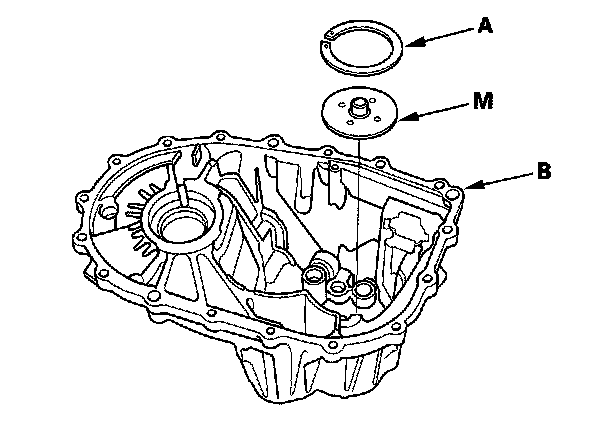
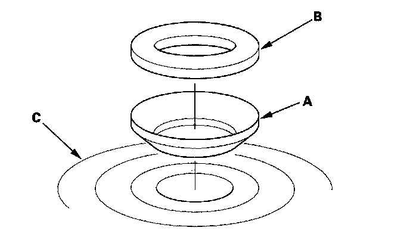
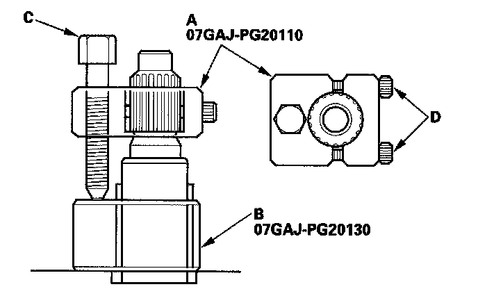
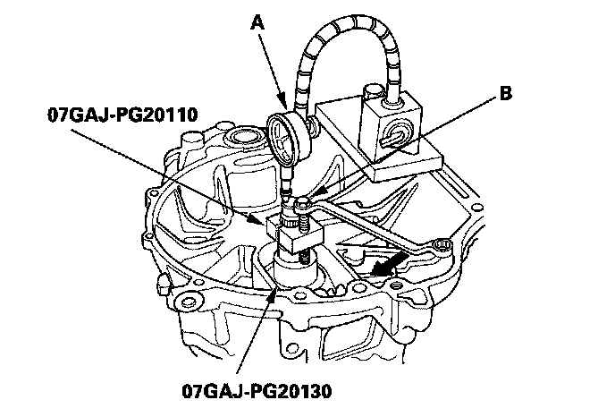
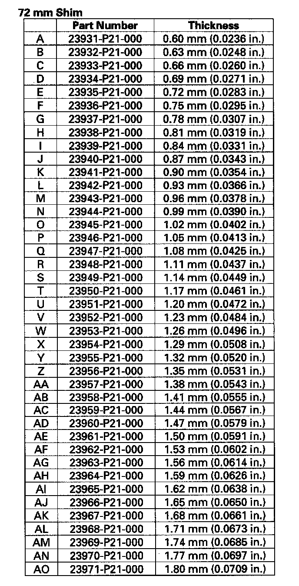
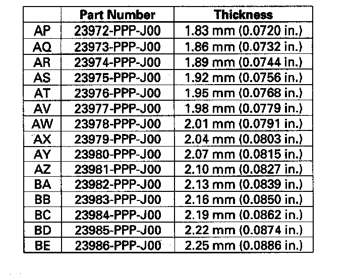

Mainshaft Thrust Clearance Adjustment
Mainshaft Thrust Clearance AdjustmentSpecial Tools Required
^ Mainshaft holder 07GAJ-PG20110
^ Mainshaft base 07GAJ-PG20130
1. Remove the 72 mm shim (A) and oil guide plate from the transmission housing (B).

2. Thoroughly clean the 28 mm spring washer (A) and 28 mm washer (B) before installing them on the clutch housing side ball bearing (C) Note the installation direction of the spring washer.

3. Install the 3rd/4th synchro hub, the distance collar, the 5th/6th synchro hub, the distance collar, and the angular ball bearing on the mainshaft.
NOTE: Refer to the mainshaft reassembly Exploded View
4. Install the mainshaft in the clutch housing.
5. Place the transmission housing over the mainshaft and onto the clutch housing.
6. Tighten the clutch and transmission housings with several 8 mm bolts.
NOTE: It is not necessary to use sealing agent between the housing for this procedure.
7. Lightly tap on the mainshaft with a plastic hammer.
8. Attach the mainshaft holder (A) and mainshaft base (B) to the mainshaft as follows:
^ Backout the mainshaft holder bolt (C), and loosen the two hex bolts (D).
^ Fit the holder over the mainshaft so its lip is towards the transmission.
^ Align the mainshaft holder lip around the groove at the inside of the mainshaft splines, then tighten the hex bolts.

9. Fully seat the mainshaft by tapping its end with a plastic hammer.
10. Thread the mainshaft holder bolt in until it just contacts the wide surface of the mainshaft base.
11. Zero a dial gauge (A) on the end of the mainshaft.

12. Turn the mainshaft holder bolt (B) clockwise; stop turning when the dial gauge has reached its maximum movement. The reading on the dial gauge is the amount of mainshaft thrust clearance.
NOTE: Do not turn the mainshaft holder bolt more than 60° after the needle of the dial gauge stops moving. Applying more pressure with the mainshaft holder bolt could damage the transmission.
13. If the reading is within the standard, the clearance is correct. If the reading is not within the standard, select the appropriate shim needed from the table, and recheck the thrust clearance.
Standard: 0.11 - 0.17 mm (0.004 - 0.007 in.)
(Example) Measure reading: 1.93 mm (0.0759 in.)
Subtract the total clearance measurement from the middle of the clearance standard 0.14 mm (0.0056 in.)
1.93 - 0.14 = 1.79 mm (0.0704 in.)
Select the shim closest to the amount calculated. For this example, the 1.80 mm (0.0709 in.) shim is best.
14. With oil guide plate and the appropriate size shim installed in the transmission housing, check the thrust clearance again to make sure the clearance is within the standard.

